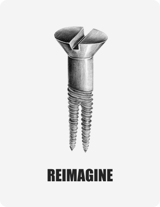

Students feel average before life begins.
They are told to move faster, learn faster, adapt faster until the future begins to sound like a race they joined late.
“As machines become smarter, will human beings continue to believe in themselves?”


Pro-human. Pro-courage. Pro-imagination. Pro-the-person-who-has-forgotten-they-still-matter.
A six-city conversation about confidence, possibility and the parts of us no machine should inherit.
The uneasy truth
They are afraid of becoming invisible.
They are told to move faster, learn faster, adapt faster until the future begins to sound like a race they joined late.
Every new tool arrives with a small private question: am I becoming useful, or merely easier to replace?
But the winning organizations will be human-first: places where judgment, trust and courage move faster than fear.
30 sparks. One fire.
Humans First, Machines Second is written for the moment when intelligence is everywhere and belief feels scarce. It does not ask people to outrun machines. It asks them to remember what machines do not carry: conscience, context, care, wonder, rebellion, forgiveness and the strange human ability to begin again.




The manifesto
Inside the book
Tap a spark. Let it open. Each is a small argument for human agency.
Tools do not create judgment. Dashboards do not create courage. The human filament is still the source of light.
People are not checkpoints in a machine process. They are the moral loop, the context loop, the consequence loop.
A recommendation can point. It cannot care. It cannot know what kind of life, company or country we are trying to build.
Human ingenuity under constraint is not obsolete. With AI, it becomes more available, more daring and more democratic.
The confident wrong answer is the new workplace hazard. The antidote is alert, humble, human scrutiny.
The live experience
No panel clutter. No cold podium. No corporate theatre. Just a room, a question, a story, a wall, a promise, and the possibility that someone leaves believing in themselves again.

Write on the Humans First Wall before the room tells you what to think.

A Sampark child, teacher or parent opens with a story. No statistics. Just life.
Vineet speaks for 30 minutes on winning without surrendering what makes us human.

The audience brings its questions: careers, children, leadership, fear, hope.

Help at least two people discover what they are capable of becoming.
Six living chapters.
Hover or tap a city. The story changes, the question deepens, the movement gathers handwriting.
Vineet in action
The best talks do not end with applause. They end with a person walking out differently.


The Humans First Wall
Across six cities, every answer is written and signed. Together they become a growing national reflection on what India refuses to lose in the age of AI.
FAQ
A few clear answers, so the experience can stay simple, human and open.
No. The book begins the conversation, but the room belongs to the people in it. Expect a live talk, questions, the Humans First Wall, the Promise and a signing experience.
Students, professionals, educators, entrepreneurs, parents and leaders, especially anyone who has quietly wondered, "Will I still matter in the age of AI?"
Yes. Seats are free, public and limited. Once a city fills, new registrations move to a waiting list.
It is a living wall at every city event where attendees answer one question: what part of being human will you never give up?
No. This is not an AI trends session. It is a human conversation about relevance, courage, judgment, possibility and how to win without becoming machine-like.
The Humans First Promise
A student. A colleague. A child. A stranger. Do not tell them about the movement. Do not tell them about the book. Just help them see themselves differently.